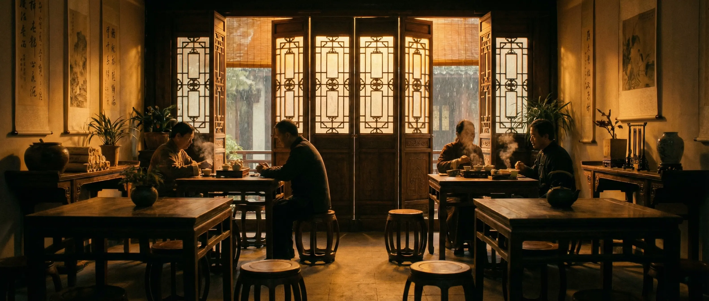

一盏茶，半山闲
茶者，南方之嘉木也
一千二百年前的笔墨，穿越到今天的杯盏之间。
山隐始于武夷山桐木关，海拔1100米。林家三代守着同一片山场 — 祖父开始种茶，父亲精炼手艺，第三代让好茶走出深山。
"好茶隐于山，不必争于市。"
LAPSANG SOUCHONG
百年老枞，松针烟熏。汤色琥珀，桂圆甜香。
¥298 / 50G
SILVER NEEDLE
全芽头制作。银毫密覆，汤色杏黄，清甜回甘。
¥528 / 50G
DA HONG PAO
三坑两涧核心产区。七泡有余香，岩韵深沉。
¥888 / 50G

每一步都是时间与手艺的对话
晨露未干时手工采摘。每斤干茶需鲜叶四万余颗。
竹匾摊晾，借阳光与微风，叶片缓慢失水。
掌心与茶叶对话。轻揉使细胞破壁，茶汁渗出。
荔枝炭慢焙八小时。去青气，锁住山场之味。
茶是一场仪式，关于慢下来，关于此刻
让好茶回归本真
Made with MK Slide